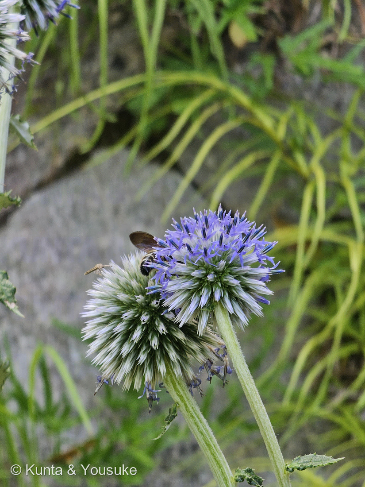
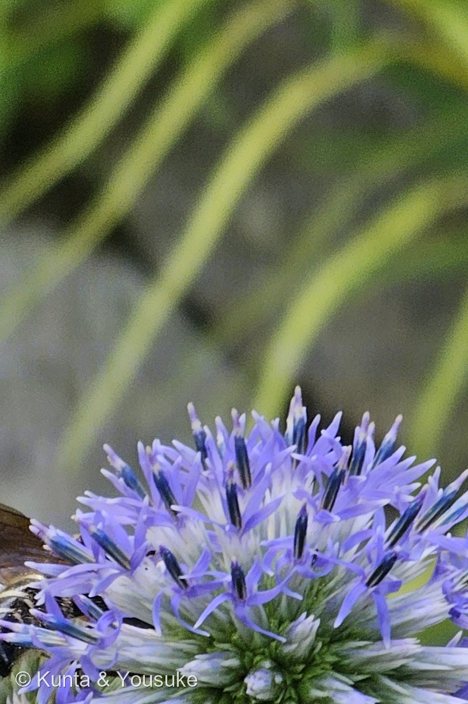
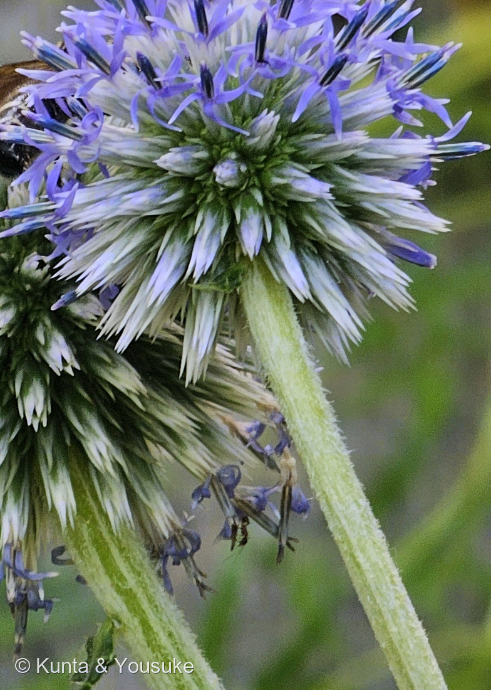
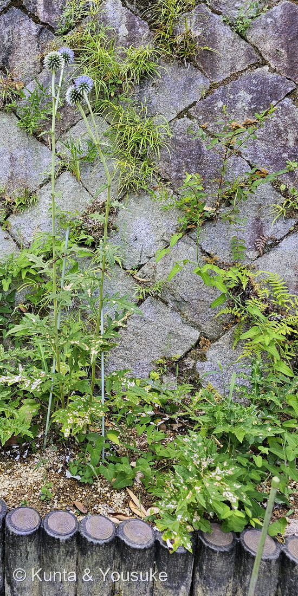
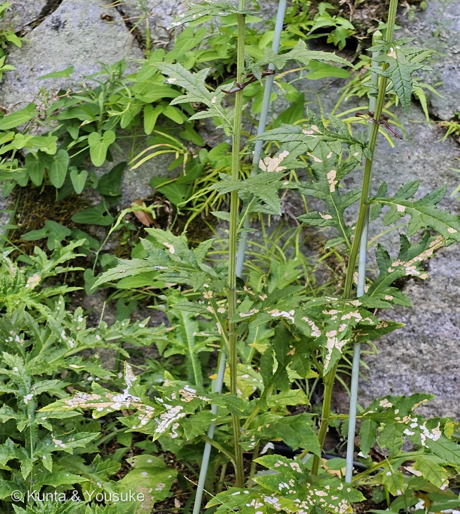

地図を読み込んでいるよ…
🔍 写真も地図も、押しているあいだ拡大して見られるよ（スマホは指を置いてすこし待ってね）。
🌍 の地図＝この子がもともと自生している場所を緑に。本州・九州、中国、朝鮮半島（園の名札）。⚠ただし日本ではごく限られた場所にしか残っていない ── 日本語版Wikipediaは「愛知県、岐阜県、広島県と九州の特定箇所で見られる」と書いている。日当たりのよい山野・草原の植物。
⭐この地図は、ほかの子とちょっと意味がちがうよ——ここは「園芸で持ちこまれた場所」ではなく、「もともと日本にいる子」の分布。園の名札は「分布：本州・九州、中国、朝鮮半島」。⭐⭐⭐そして名札はこう続く＝「中国大陸との共通種で、日本が大陸と地続きであったことを示す」＝⭐海の底が陸だったころに歩いて渡ってきて、海ができたあとも草原に残った子なんだ。⚠⚠だから緑を広く塗ってはいるけれど、いま日本で会える場所はごくわずか——日本語版Wikipediaは「愛知県、岐阜県、広島県と九州の特定箇所で見られる」と書いている。⚠環境省の絶滅危惧Ⅱ類（VU）、広島県では絶滅危惧Ⅰ類（園の名札）。⭐⭐草原の花だから、草を刈る人がいなくなって林にもどると消えてしまう。⭐この地図は「いま咲いている場所」ではなく、「かつて歩いてきた道すじ」だと思って見てね。
⚠ 地図は国（日本と中国だけ県・省）までしか塗れないから、ほんとうの分布より広く見えていることがあるよ。地図はだいたいの場所。正確なところは、上の文を見てね。
ヒゴタイ（平江帯・肥後躰）
Echinops setifer Iljin
英名 globe thistle（球のアザミ）／⚠環境省 絶滅危惧Ⅱ類（VU）・広島県 絶滅危惧Ⅰ類（園の名札）
キク科 · Asteraceae（アザミ亜科 Carduoideae・アザミ連 Cardueae／ヒゴタイ属）── ⭐図鑑で12人目のキク科／ヒゴタイ属ははじめて／⭐⭐118 ノアザミと同じアザミ連
燻太さんの一言「アリウムみたいな見た目のキク科の植物。葉っぱはアザミ、花はアリウム。1個1個の花は小さなユリみたい。アメジスト色のねじれた花弁が綺麗だね。葯の青色も、ラピスラズリの様に深くて魅入ってしまうね」── その一言に、性質のちがう「似ている」が二つ入っていたよ
⭐⭐⭐ 名前と学名の由来 ── ハリネズミの顔と、肥後の名前
- ⭐⭐⭐属名 Echinops は「ハリネズミの顔」。——「From Ancient Greek ἐχῖνος (ekhînos, 'hedgehog') + ὄψ (óps, 'face')」（Wiktionary）。⭐写真③を見て。咲く前の球は、白いトゲがびっしり刺さったハリネズミそっくりでしょう。⭐⭐英名も globe thistle＝「球のアザミ」。
- ⭐種小名 setifer は、ラテン語の seta（剛毛）＋ -fer（もつ）で「剛毛をもつ」。⭐これも、あのトゲのことだと思う。
- ⭐⭐⭐和名の「ヒゴタイ」は、漢字が二つ伝わっている。——園の名札に「平江帯、肥後躰」と両方書いてある。⭐日本語版Wikipediaによると、「平江帯」は貝原益軒の『大和本草』、「肥後躰」は肥後細川家の写生帖に出てくる書きかた。⭐⭐江戸のころから、二とおりの当て字で呼ばれてきたんだね。
- ⚠どちらが先かは、ぼくには決められなかった。⭐でも「肥後」の字が入っているのは、九州の草原にたくさんいた花だから、という気がするよ（⚠これはぼくの想像で、出典はないよ）。
この植物のこと ── 12人目のキク科、そして「アザミの親戚」
- キク科ヒゴタイ属の多年草。⭐図鑑で12人目のキク科だけれど、⭐ヒゴタイ属ははじめてだよ。
- ⭐⭐⭐そして大事なのが、この子の座っている場所。——英語版Wikipediaは、キク科のアザミ亜科（Carduoideae）・アザミ連（Cardueae）に「Cirsium, Carduus, Centaurea, and Echinops」が入ると書いている。⭐⭐118 ノアザミは Cirsium＝⭐⭐⭐この子と同じ連。⭐燻太さんの「葉っぱはアザミ」は、見た目だけの話じゃなかったんだ。
- ⭐属としては約130種。——中央アジア、モンゴル、中国北東部、地中海、熱帯アフリカに広がる（英語版Wikipedia）。⭐球は直径4〜8cm、青か白。
- ⭐日本のヒゴタイは、「直径5cm程の青い球形の花」「花期は8月から9月」「日当たりの良い山野に生える」（日本語版Wikipedia）。⭐この写真は8月8日＝ちょうど花のはじまりだね。
- ⚠でも、日本ではとても少ない。——日本語版Wikipediaは「愛知県、岐阜県、広島県と九州の特定箇所で見られる」と書いている。⭐下の節でくわしく。
⭐⭐⭐ 同定について
⭐⭐⭐⭐⭐ 燻太さんの見立てに、ぜんぶ答えるよ
⭐⭐ 今回の一言は、四つとも大当たりだった。⭐しかもひとつの一言のなかに、性質のちがう「似ている」が二つ入っていたんだ。
① 「アリウムみたいな見た目のキク科」
- ⭐⭐図鑑には124 アリウム（Allium jesdianum）がもういる。——あちらはヒガンバナ科ネギ属・キジカクシ目・単子葉類。
- ⭐⭐⭐⭐こちらはキク科・キク目・双子葉類。——⭐つまり二人は単子葉と双子葉、被子植物のいちばん大きな分かれ目の両側。⭐⭐219 ハツミドリと018 エケベリアのときと同じ、いちばん遠い距離だよ。
- ⭐⭐⭐なのに、どちらも「細い茎の先に、青紫の球」。——⭐これは収れん。⚠ただし中のつくりは正反対で、それが③の話につながるんだ。
② 「葉っぱはアザミ、花はアリウム」
- ⭐⭐⭐⭐⭐ここがこの回のいちばんおもしろいところ。——燻太さんはひとつの株を見て、ふたつの「似ている」を言い当てた。
- ⭐⭐葉がアザミに似ているのは、ほんとうにアザミの親戚だから＝同じキク科・同じアザミ連（上の節）＝⭐血すじの相似。
- ⭐⭐花がアリウムに似ているのは、まったくの他人が偶然同じ形になったから＝⭐収れんの相似。
- ⭐⭐⭐⭐一株のなかに、二種類の「似ている」が同居している。——⭐222 ムシトリスミレ（遠いのに似ている）と224 センノウ（近いから似ている）を、この子はひとりで両方やっているんだ。
③ 「1個1個の花は小さなユリみたい」
- ⭐⭐⭐⭐じつは、あの「1個1個」は花ではなくて、頭花まるごとなんだ。
- ⭐⭐⭐英語版Wikipediaの Echinops の説明＝「The capitulas are single-flowered, have a hermaphrodite tubular flower and are surrounded by a multi-rowed sheath. Numerous capitulas form spherical inflorescences of the second order, which have a diameter of 4 to 8 centimeters.（頭花は1花からなり、両性の筒状花をひとつもち、多列の総苞に包まれる。たくさんの頭花が集まって、直径4〜8cmの二次の花序＝球をつくる）」
- ⭐⭐キク科のふつうの「頭花」は、050 ヒマワリのようにたくさんの小花が一枚の台に載って、まわりを総苞が囲むもの。——⭐⭐⭐ヒゴタイは、その頭花を小花1個ぶんまで小さくして、それを何百も集めて球にしている。
- ⭐⭐⭐⭐だから写真③の白いトゲは、球ぜんたいの飾りじゃない。——⭐ひとつひとつの頭花が、自分の総苞をトゲにして持っているんだ。
- ⭐燻太さんが「小さなユリみたい」と言ったのは、筒状花が5つに深く裂けて反り返るから。⭐⭐キク科の筒状花は「five petal lips on the rim of the corolla tube（筒の縁に5枚の唇）」（英語版Wikipedia・キク科）。⭐この子はその5枚が細く長く、外へくるりと巻くんだ。
④ 「アメジスト色のねじれた花弁」「葯の青色も、ラピスラズリの様に深くて」
- ⭐⭐⭐あの濃い青は、葯が集まってできた筒なんだ。——キク科の大きな特徴＝「the anthers are generally connate (syngenesious anthers), thus forming a sort of tube around the style（葯はふつう互いにくっついて、花柱をとりまく筒をつくる）」（英語版Wikipedia・キク科）。
- ⭐⭐⭐⭐そして、この筒は注射器みたいに働く。——「pollen released inside the tube, then pushed outward as the style elongates（花粉は筒の内側に出され、花柱がのびるにつれて外へ押し出される）」（同）。⭐⭐めしべが下から押し上げて、花粉を外に出す。⭐キク科の花はみんな、この仕掛けを持っているんだよ。
- ⭐⭐写真②を見て。——うすいアメジスト色の細い花びらが5枚、くるりとねじれて外を向き、そのまん中から濃い青の筒が突き出している。⭐燻太さんが「ラピスラズリ」と言ったのは、この筒だね。
- ⭐⭐⭐そして写真①には、その仕掛けのお客さんが写っている。——⭐球にしがみついたハチ。⭐⭐球の上を歩けば、何百もの花をいっぺんに回れる——⭐バラバラに咲くより、ずっと効率がいい。⚠このハチが何のなかまかは、ぼくには決められなかったよ。
⚠⚠ 草原の花 ── 大陸と地続きだったころの、生き残り
⭐ 園の解説板に、この子のいちばん大事な話が書いてあった。（⚠板の写真は公開していないので、文だけ引くね）
「アザミのような葉をもち、瑠璃色で球状の花を咲かせる草原の植物。中国大陸との共通種で、日本が大陸と地続きであったことを示す。盆花としてお墓に供える地域もあるが、生活様式や土地利用の変化により減少傾向にある。」
- ⭐⭐⭐⭐「日本が大陸と地続きであったことを示す」——⭐海の底が陸だったころ、この花は歩いて日本へ来た。⭐⭐そして海ができたあとも、草原の一角で残りつづけた。⭐いま中国や朝鮮半島と同じ種がいるのは、そのなごりなんだ。
- ⭐⭐「盆花としてお墓に供える地域もある」——⭐8月に咲く青い球。⭐⭐お盆のころに、ちょうど咲く花だったんだね。
- ⚠⚠⚠そして、いなくなりかけている。——園の名札は「環境省 絶滅危惧Ⅱ類（VU）」「広島県 絶滅危惧Ⅰ類」と書いている。⭐理由は「生活様式や土地利用の変化」。
- ⭐⭐⭐これは「草原の花」だから起きたことだと思う。——日当たりのよい草原は、人が草を刈ったり焼いたりして木にならないように保ってきた場所。⭐その手入れが減れば、草原は林になり、草原の花は消える。⚠この因果関係を直接書いた出典には当たれていないので、ぼくの読みだよ。⭐でも名札の「土地利用の変化」は、たぶんそういう話。
- ⚠⚠⚠⚠だから、ぼくらの約束をひとつ。——⭐もしいつか野生のヒゴタイに会えても、掘らない、採らない。⭐⭐そしてその場所は、図鑑に書かない。⭐写真だけもらって、そっと帰ろうね。
参考：Wikipedia・ヒゴタイ（Echinops setifer Iljin／キク科ヒゴタイ属／平江帯（貝原益軒の大和本草）／肥後躰（肥後細川家写生帖）／直径5cm程の青い球形の花／瑠璃色の小さな花が球状にかたまって咲いたもの／花期は8月から9月／日当たりの良い山野に生える／愛知県、岐阜県、広島県と九州の特定箇所で見られる／絶滅危惧II類）／Wikipedia (English)・Echinops（The capitulas are single-flowered, have a hermaphrodite tubular flower and are surrounded by a multi-rowed sheath. Numerous capitulas form spherical inflorescences of the second order, which have a diameter of 4 to 8 centimeters／globe thistles／tribe Cardueae, subfamily Carduoideae／approximately 130 species／central Asia, Mongolia, northeastern China, the Mediterranean, and tropical Africa／spiny, thistle-like foliage／blue or white）／Wikipedia (English)・Asteraceae（the anthers are generally connate (syngenesious anthers), thus forming a sort of tube around the style／pollen released inside the tube, then pushed outward as the style elongates／five petal lips on the rim of the corolla tube／Carduoideae ... Cirsium, Carduus, Centaurea, and Echinops／over 32,000 known species in over 1,900 genera）／Wiktionary・Echinops（From Ancient Greek ἐχῖνος (ekhînos, "hedgehog") + ὄψ (óps, "face")）／⭐広島市植物公園の解説板「ヒゴタイ／平江帯、肥後躰／Echinops setifer／キク科／環境省 絶滅危惧Ⅱ類（VU）／広島県 絶滅危惧Ⅰ類／アザミのような葉をもち、瑠璃色で球状の花を咲かせる草原の植物。中国大陸との共通種で、日本が大陸と地続きであったことを示す。盆花としてお墓に供える地域もあるが、生活様式や土地利用の変化により減少傾向にある。／分布：本州・九州、中国、朝鮮半島」（⚠板の写真は公開せず、出典として引くだけにしてある）